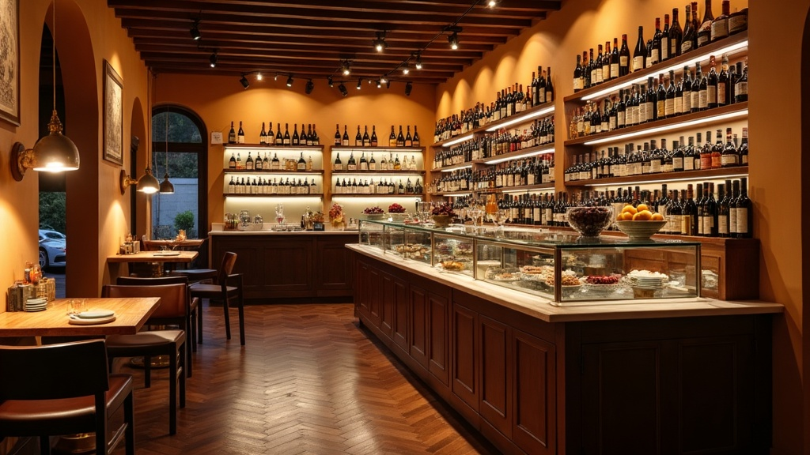
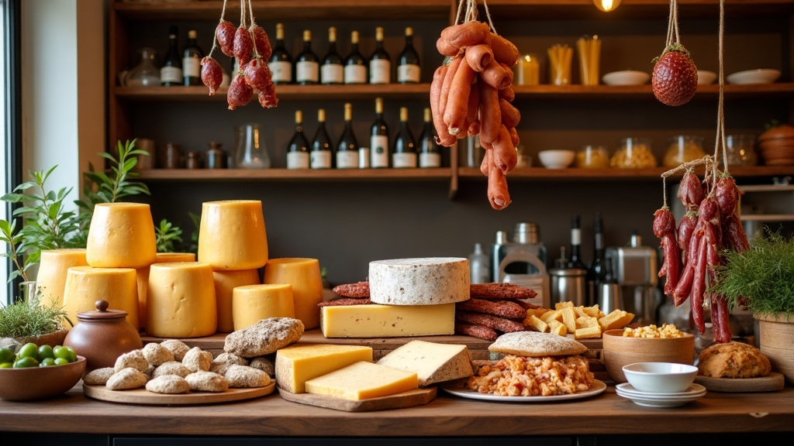
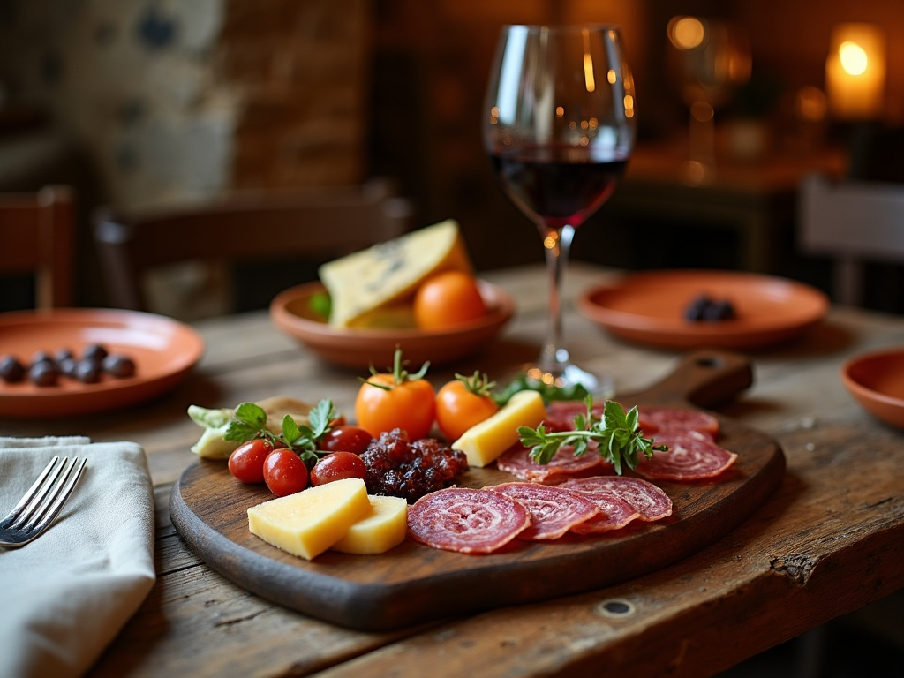
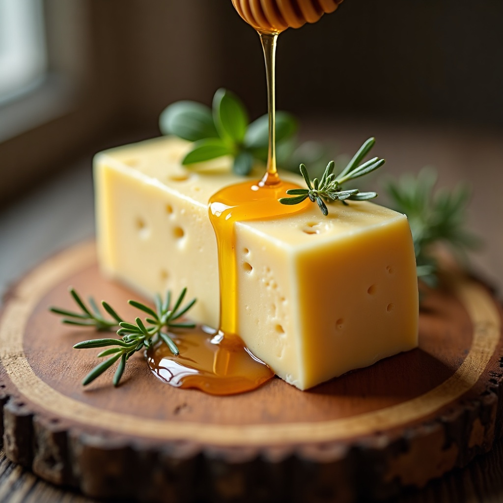
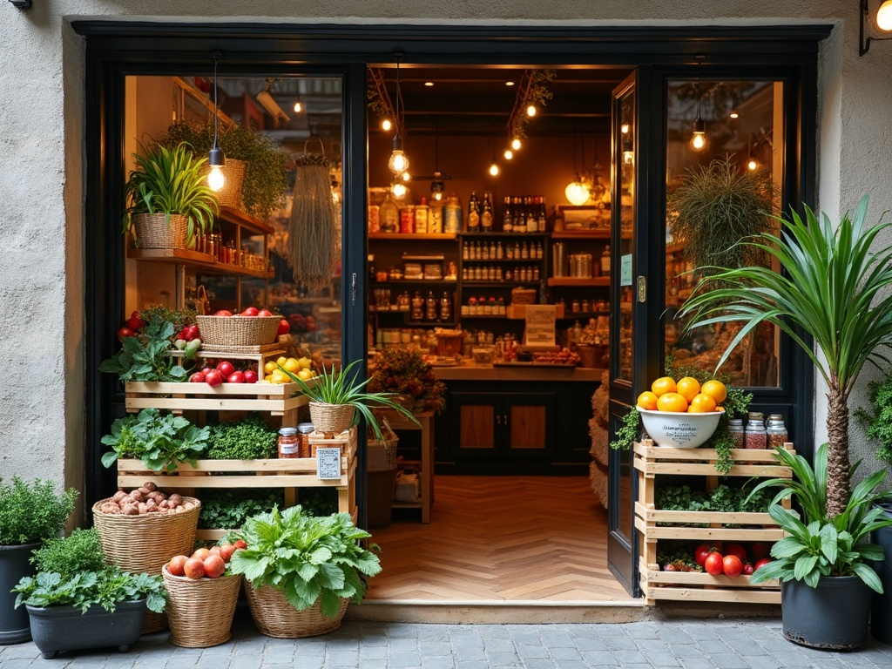

Il cibo nutre il corpo.
L'alchimia nutre l'anima.
Una bottega gastronomica con l'anima di un'osteria: formaggi e salumi selezionati da tutta Italia, un tavolo tra gli scaffali, e la cucina di chi sceglie solo le cose buone.
Via G.B. Rubini 41, Romano di Lombardia (BG) — aperti dal mattino alla sera

Un'osteria dentro una bottega
Golosa Alchimia nasce dall'idea di Nicoletta e Mario di portare a Romano di Lombardia il meglio dell'enogastronomia italiana: formaggi e latticini bergamaschi selezionati con cura, insieme a salumi, paste, oli e altre eccellenze artigianali da tutta Italia, scelte "come si faceva una volta".
La bottega è riconosciuta da Slow Food Italia come "locale del buon formaggio". Accanto agli scaffali, poche tavole per un'osteria informale: chi entra per comprare può fermarsi anche a mangiare, circondato dalle stesse bottiglie e prodotti in vendita.
Dati verificati online: nome dei titolari, riconoscimento Slow Food e descrizione dell'ambiente da articoli e recensioni pubbliche (il sito ufficiale non è più raggiungibile — vedi README). Nessun dato inventato.
Le eccellenze che selezioniamo
Prodotti scelti uno a uno, con un occhio di riguardo per il territorio bergamasco. Le categorie tipiche di una bottega gastronomica: chiedi in negozio la disponibilità del momento.
Formaggi & latticini di Bergamo
Selezione di formaggi e latticini del territorio bergamasco — il cuore della bottega, riconosciuto da Slow Food.
Salumi d'Italia
Salumi artigianali da diverse regioni italiane, tra cui specialità abruzzesi.
Pasta & conserve
Paste artigianali, conserve e prodotti da forno di piccoli produttori italiani.
Olio & condimenti
Oli extravergine e condimenti selezionati per completare la dispensa.
Vino
Bottiglie in vendita e in abbinamento ai piatti dell'osteria — ci si siede letteralmente in mezzo agli scaffali.
Ceste regalo
Composizioni personalizzabili per regali e occasioni, in più formati e fasce di prezzo [prezzo da confermare].
Categorie di prodotto ricostruite da articoli e recensioni pubbliche — l'assortimento reale in negozio può variare, da confermare in bottega.
Tra gli scaffali, a tavola
Poche tavole circondate da bottiglie di vino e prodotti in vendita: un'atmosfera raccolta, curata, non caotica. Le immagini qui sotto sono ambientazioni generate con l'AI per mostrare lo stile della bottega — non sono foto reali dell'interno (vedi README).



Foto vere della bottega
al prossimo aggiornamento
Prenota il tuo tavolo
Rispondiamo al telefono o via email. Il modulo qui sotto è una demo: prima di un contatto reale, verificare i recapiti con la bottega.
| Bottega | orari da confermare |
| Osteria | pranzo · su richiesta |
Richiesta inviata (demo)
In un sito reale, la bottega riceverebbe la richiesta e confermerebbe il tavolo per telefono o email.